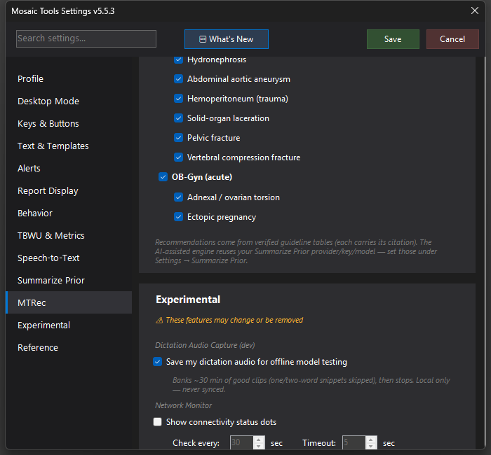

CDP Integration
Reads Mosaic and Clario through the Chrome DevTools Protocol instead of screen-level UI Automation — faster, more reliable, and the foundation for the in-editor visual features.


What it does
Mosaic's report screen is a web page inside an embedded browser, and Clario is a Chrome web app. CDP lets MosaicTools read and modify those pages directly through the browser's own debugging protocol — instant JS evaluation instead of walking accessibility trees. That means faster and more accurate scraping (accession, drafted state, clinical history, exam notes, Priority/Class, critical note creation), plus a set of features that are only possible with DOM access: independent column scrolling, auto-scroll to the cursor while dictating, dictated-text highlighting, visual report enhancements, flashing alert text, in-editor impression-fixer buttons, MTRec boxes, and Mosaic zoom memory.
How to turn it on / set it up
Mosaic — in Settings → Experimental → Mosaic CDP (Direct DOM Access), check Use CDP for Mosaic interaction (requires a Mosaic restart the first time), then enable whichever sub-features you want.
Clario — in the Clario CDP (Direct DOM Access) section, check Use CDP for Clario interaction, enter your Clario URL, and click Setup Chrome CDP Shortcut. This creates a "Clario CDP" desktop shortcut (and a profile junction) so Chrome launches with CDP enabled while keeping your normal profile. Close Chrome before first launching it, then always open Clario from that shortcut.
The CDP Status dashboard at the bottom of the section shows live green/red dots for both connections.
Using it
Invisible when working: everything is just faster and steadier. The Clario TBWU injection and instant critical-note creation also depend on it.
Tips & gotchas
- UI Automation remains the fallback — if CDP is unavailable, MosaicTools silently falls back, so enabling CDP can't leave you worse off.
- If CDP-dependent features stop, check the status dashboard first; the Clario side usually means Chrome wasn't launched from the "Clario CDP" shortcut.
- Known interaction: the Independent Column Scrolling CSS can corrupt the page for RadPair users — turn that sub-option off if you run RadPair.